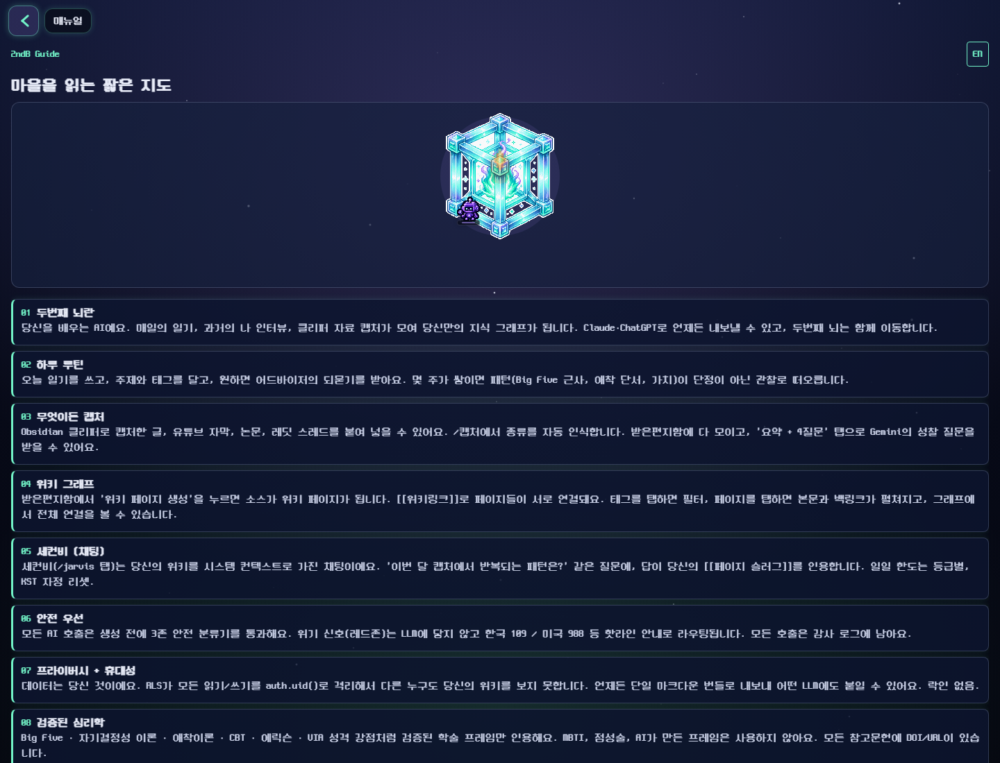
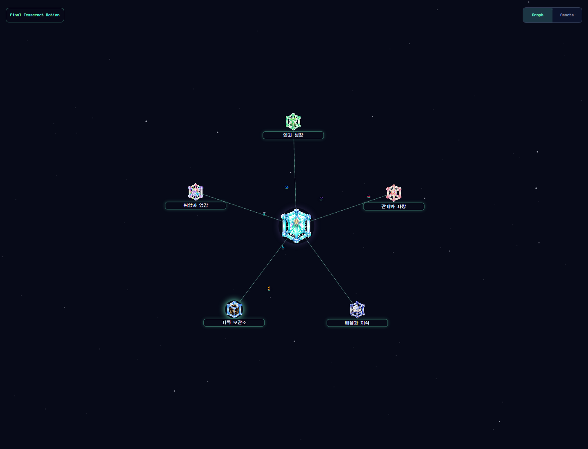
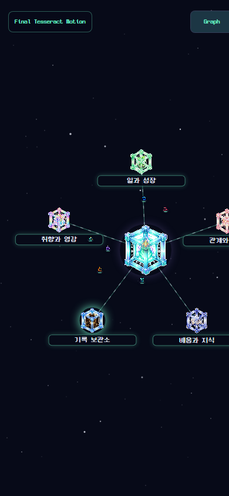

P0
기본 로컬 환경에서 앱이 첫 렌더 전에 죽음
현재 `.env`의 `EXPO_PUBLIC_SUPABASE_ANON_KEY`가 비어 있지는 않지만 20자 미만이라 zod 검증에서 즉시 crash가 난다. UI 감사도 dummy 공개값을 별도 프로세스에 주입해야 진행 가능했다.
정적 검사와 실제 웹 렌더 캡처를 함께 봤다. 브랜드 방향은 강하지만, 모바일 반응형 폭 제어와 DESIGN.md 규칙 실행 사이에 launch-blocker급 간극이 있다.
현재 `.env`의 `EXPO_PUBLIC_SUPABASE_ANON_KEY`가 비어 있지는 않지만 20자 미만이라 zod 검증에서 즉시 crash가 난다. UI 감사도 dummy 공개값을 별도 프로세스에 주입해야 진행 가능했다.
`/sign-in`, `/sign-up`, `/manual`, 그래프 프리뷰에서 390px 폭 기준 오른쪽 콘텐츠가 잘린다. 첫 인상 화면과 약관 화면이 동시에 깨져 launch blocker로 본다.
no gradient, no glass, no dark shadow 규칙과 다르게 app shell, panels, buttons, graph labels가 gradient, glass copy, shadow props를 구조적으로 쓴다.
`/journal`, `/imagine`, `/mbti`, `/trinity`, dev preview routes가 아직 사용자 경험 또는 route tree에 남아 있다. "담기 단일 입력"과 검증된 자기이해 포지션이 흔들린다.



